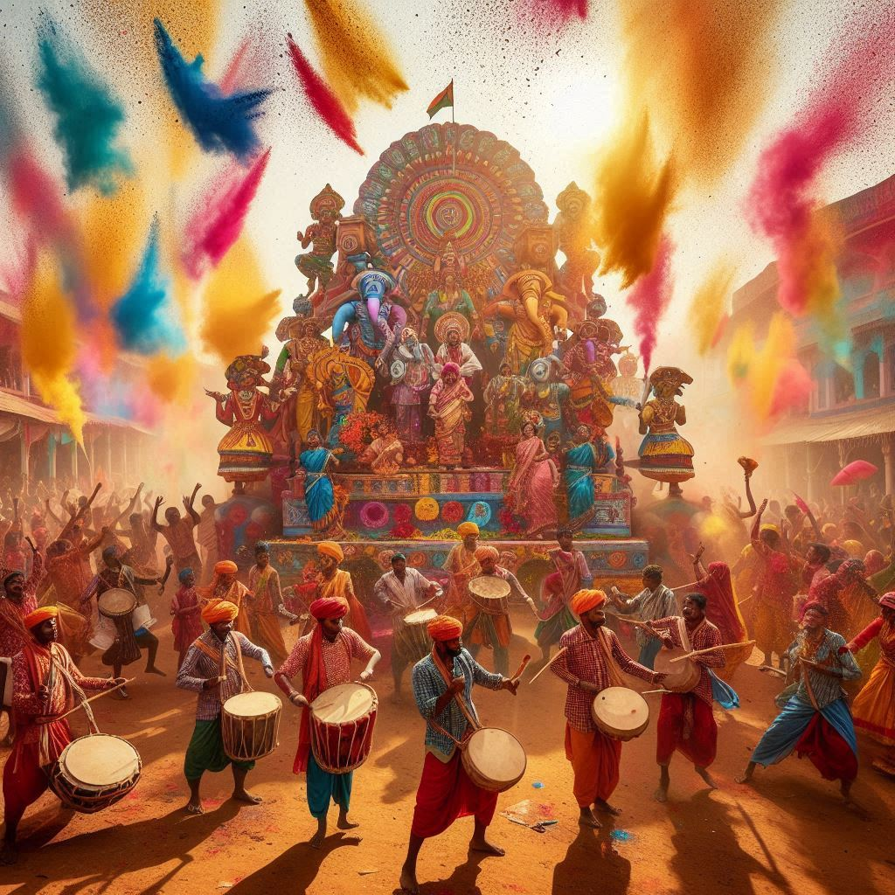
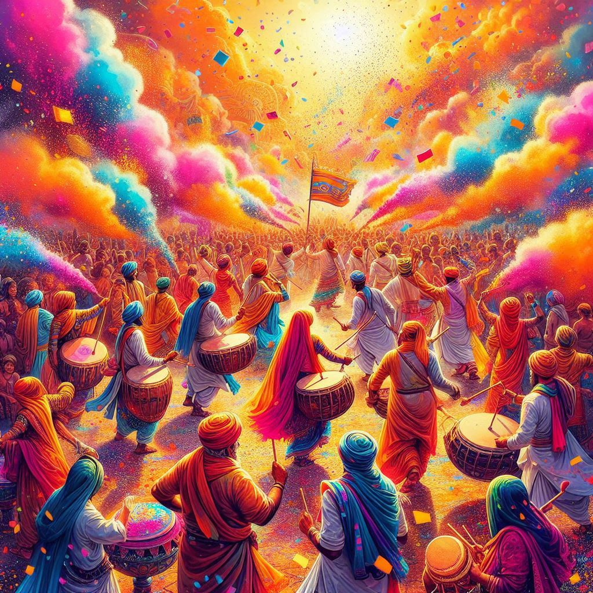

Chhattisgarh, known for its rich cultural heritage and tribal traditions, celebrates a variety of festivals
that reflect its deep-rooted connection to nature, agriculture, and spiritual beliefs. The festivals here
are vibrant and involve music, dance, and traditional rituals. Here are some of the key festivals celebrated
in Chhattisgarh:
1. Bastar Dussehra
- Significance: Bastar Dussehra is one of the longest Dussehra celebrations in the world,
lasting for 75 days. It is unique as it is not centered around the traditional Ramayana story, but
instead is dedicated to the worship of local deities and the celebration of tribal culture.
- Celebrations: The festival is marked by elaborate rituals, processions, and cultural
performances. Tribal communities come together in Jagdalpur to celebrate this grand event, which
includes the worship of the goddess Danteshwari, the presiding deity of the region.
- Highlight: The Rath Yatra, where a huge chariot is pulled by thousands of devotees, is
one of the most significant events during Bastar Dussehra.
2. Madai Festival
- Significance: Celebrated by the tribal communities of Chhattisgarh, the Madai festival
is held in honor of local deities and is a celebration of community spirit and devotion.
- Celebrations: The festival involves grand processions, accompanied by traditional music,
dance, and storytelling. Villagers gather to worship their local deities, and fairs are set up where
people engage in trade and enjoy local food.
- Highlight: The vibrant atmosphere, with tribal people dressed in traditional attire,
performing their folk dances, and singing songs of devotion, makes Madai a cultural spectacle.
3. Goncha Festival
- Significance: This is a unique festival celebrated in Bastar during which mock hunting
games are played using goncha (a type of fruit) and tukki (a traditional bow made from
bamboo).
- Celebrations: It is primarily celebrated by the Gond tribe and marks a connection to
their ancient hunting traditions. Participants use bamboo pistols to shoot gonchas at each other in
a symbolic manner.
- Highlight: The festival is a blend of fun, culture, and tradition, showcasing the tribal love
for adventure and communal bonding.
4. Hareli Festival
- Significance: Hareli is an agrarian festival celebrated in Chhattisgarh at the
beginning of the monsoon season, marking the start of the sowing season.
- Celebrations: Farmers worship their agricultural tools and cattle, seeking blessings for a
bountiful harvest. They also hang neem branches at the entrance of their homes for protection
against diseases.
- Highlight: Traditional games like Gedi (walking on bamboo stilts) are played during
this festival, especially by children, and herbal medicines are prepared for treating livestock.
5. Pola Festival
- Significance: Pola is a festival celebrated primarily by farmers in Chhattisgarh,
where bulls, essential to agriculture, are worshiped.
- Celebrations: The bulls are bathed, decorated with colorful clothes, and paraded through the
village. In the evening, bull races are organized, and the best-decorated bull is often given a
prize.
- Highlight: Pola is a fun, community-driven festival where farmers express gratitude to their
animals for their contribution to the agricultural cycle.


6. Teej Festival
- Significance: Teej is a major festival celebrated by women in Chhattisgarh, marking
the arrival of the monsoon and honoring Goddess Parvati.
- Celebrations: Married women observe fasts and pray for the well-being and long life of their
husbands. They adorn themselves in colorful attire, apply mehndi (henna) on their hands, and
participate in traditional singing and dancing.
- Highlight: The festival strengthens the bond between married couples and showcases the
cultural significance of marriage in Chhattisgarh society.
7. Charta Festival
- Significance: Celebrated by the Gond tribe, Charta is a harvest festival that
marks the end of the agricultural season.
- Celebrations: It involves offering the first grain of the harvest to the local deities as a
symbol of gratitude. Traditional dances, songs, and feasts are a major part of the celebrations.
- Highlight: The festival emphasizes the connection between the tribal communities and nature,
reflecting their agrarian roots.
8. Navakhai
- Significance: Navakhai is a harvest festival celebrated primarily in the eastern parts
of Chhattisgarh. It is observed to thank the deities for a successful harvest and to celebrate the
first consumption of the newly harvested rice.
- Celebrations: Families cook and consume the first rice of the season together, with special
prayers and offerings made to the gods. Traditional feasts and community gatherings are an important
part of this festival.
- Highlight: Navakhai fosters unity and cooperation among the villagers, as they come together
to share the fruits of their hard work.
9. Diwali
- Significance: Like the rest of India, Diwali is celebrated in Chhattisgarh with great
enthusiasm. However, in rural areas, the festival has a unique flavor as it also marks the end of
the agricultural season.
- Celebrations: Homes and temples are lit up with oil lamps, and people exchange sweets and
gifts. Traditional rituals are performed to worship Goddess Lakshmi, the goddess of wealth.
- Highlight: In many tribal areas, Diwali is celebrated with traditional dances, folk music,
and community feasts.
Conclusion
The festivals of Chhattisgarh are deeply rooted in its tribal culture and agrarian lifestyle. From the
grand Bastar Dussehra to the vibrant Madai and Hareli festivals, each celebration reflects the region’s
reverence for nature, community, and spirituality. Through these festivals, the people of Chhattisgarh
preserve their traditions and express their joy, gratitude, and devotion in colorful and communal ways.